Pladsylvanian Confederation
Pladsylvania shall be made up of constituent territories, each of which shall have their own respective rulers.
- Section 4.1 of the 3rd Constitution of Pladsylvania
| Pladsylvanian Confederation | |
|
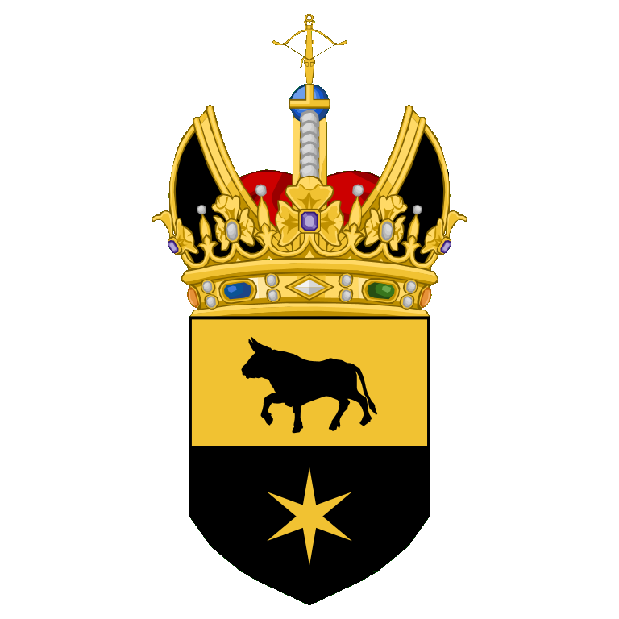 |
|
| Motto: "Prosperity to Pladsylvania!" | |
|
Anthem:
Prosperous Ode
Die Gedanken Sind Frei (Instrumental)
|
|
|
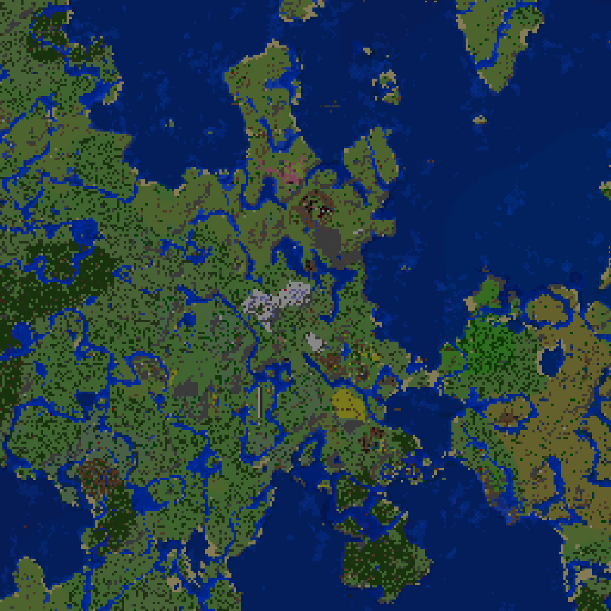 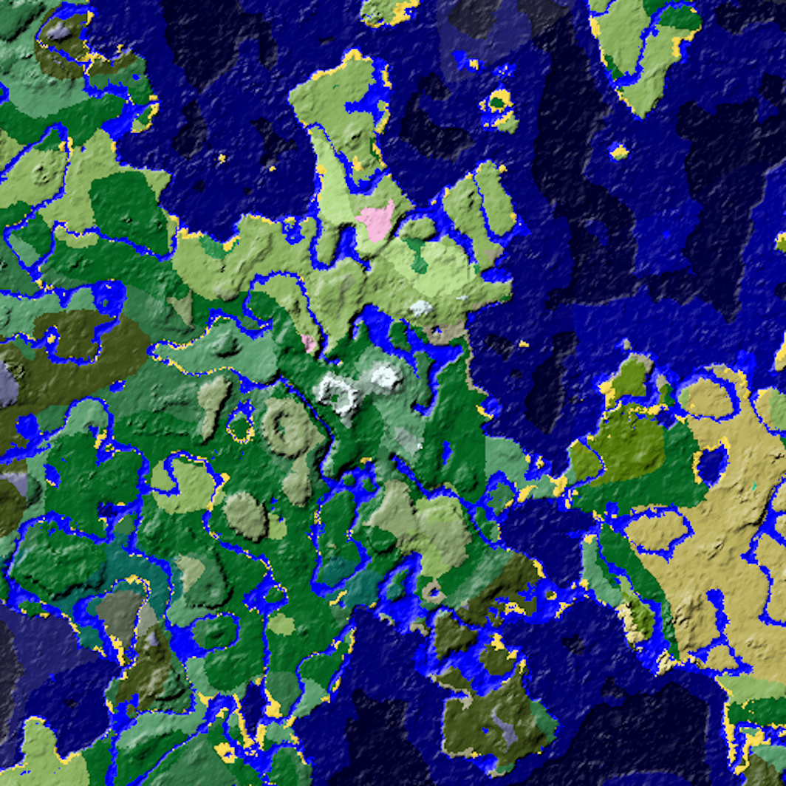 |
|
| Capital |
Kaiserbuhel, Imperial Abbey of Mittelwald
|
|---|---|
| Largest settlement |
Dunotahl, Burgraviate of Krauhalt
|
| Official Language | Vollandan
(de facto, formerly de jure) |
| Religion | Allevaricism |
| Demonym | Pladsylvanian |
| Government | Federal dietary semi-constitutional monarchy |
| Emperor Regent Viceregent |
Jon of Pladsylvania Aran of Krauhalt Stephanie of Bluetchen |
| Legislature | Imperial Diet |
| Electors (7) | Jack of Unterarmut (Speaker of the Diet)
Stephanie of Bluetchen (Clerk of the Diet) Aran of Krauhalt Caelan of Nebligen Thomas of Malrost Lotus of Gattinborn Asif of Novigast |
| Confederated | 1050Nov. 30, 2023 AVL |
|
Preceded by
|
|
The Pladsylvanian Confederation, or simply Pladsylvania, is the sole country in the fifth realm. Its de facto mainland stretches around three kilometers north to south and two kilometers east to west, both roughly centered on 0, 0.
The Confederation itself was established alongside the settling of the fifth realm, following the evacuation of the Tae Torkan People's Republic due to the Chickenheimer Disaster. Unlike its predecessor, Pladsylvania has been a fully independent state from its inception, rather than originating as a subordinate, autonomous polity. Despite that, it maintains considerable continuity with the defunct Tae Torkan People's Republic, having the same ruler installed and little change affected on its economic structure.
☰ Contents
Etymology
The name Pladsylvania derives from Plad-; a contraction of the word 'Paladin', and -sylvania; meaning 'forested land'. Collectively, the name was chosen to mean Paladins' Forested Land or Wooded Land of the Paladins.
History
Post-Confederation | 1050Nov. 30, 2023 - 1253Jun. 20, 2024 AVL
Pladsylvania was confederated concurrently with the settling of the Fifth Realm itself. Both were done in direct response to the Chickenheimer Disaster which laid waste to the Tae Torkan People's Republic. Jack, grand orchestrator of the galline catastrophe, though escaping the now-irradiated TTPR and arriving in the Fifth Realm along with the other survivors, found himself in an awkward position politically. Despite being exiled and subject to potential arrest or execution by imperial authorities, he was somehow able to secure and hold a seat on the nascent Imperial Diet. Resultantly, he would be forced to fulfill his electoral duties, not least of which included his unsuccessful attempt to have himself pardoned, in absentia. This state of affairs remained until Jack and the Emperor struck a deal, wherein the former received a full pardon. This deal also involved Jack's appointment as chair of the ultimately short-lived Imperial Committee for the Development, Repair & Inspection of the Netherworks (ICDRIN).
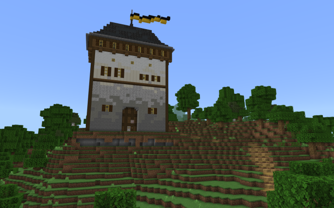
Kaiserbuhel, the oldest settlement on the realm, was predictably founded at the very start of this period, later joined by the second-oldest settlement in Mittelwald; Ausbernhof. Most of the other founding territories' capital settlements, such as Dunotahl, Atemkirsche, Mannstadt, and Waechterhagen were also founded during this time.
Draconian War | 1061Dec. 11, 2023 AVL - Present
Shortly after the confederation of Pladsylvania, the Imperial Diet voted to commence war on the Ender Dragon, with the express aim of securing the resources of the end dimension. The resulting army was composed of troops from Mittelwald, Nebligen, Krauhalt and Transfluss. Launching a coordinated attack, they managed to kill the Ender Dragon while sustaining minimal casualties, opening up the outer end islands for plunder and exploration.
Northern Malaise | 1254Jun. 21, 2024 - 1302Aug. 8, 2024 AVL
The Northern Malaise was a period of heightened tension in the north of Pladsylvania, centered around the County of Malrost. It began in 1254 AVL with the Mannstadt Mining Disaster, in which a wither breached containment under the Malrostan capital. An emergency crisis response force consisting of troops from Mittelwald and Transfluss eventually arrived on the scene. Though the Transflussan contingent suffered heavy casualties, they were ultimately able to down the wither. Malrost's perceived recklessness in the incident, mainly regarding Thomas' failure to communicate his intentions to summon a wither under the settlement, was the source of much controversy. Being antagonized to much of Pladsylvania in the event's aftermath, the territory lost even the ardent support from the Emperor it had previously enjoyed.
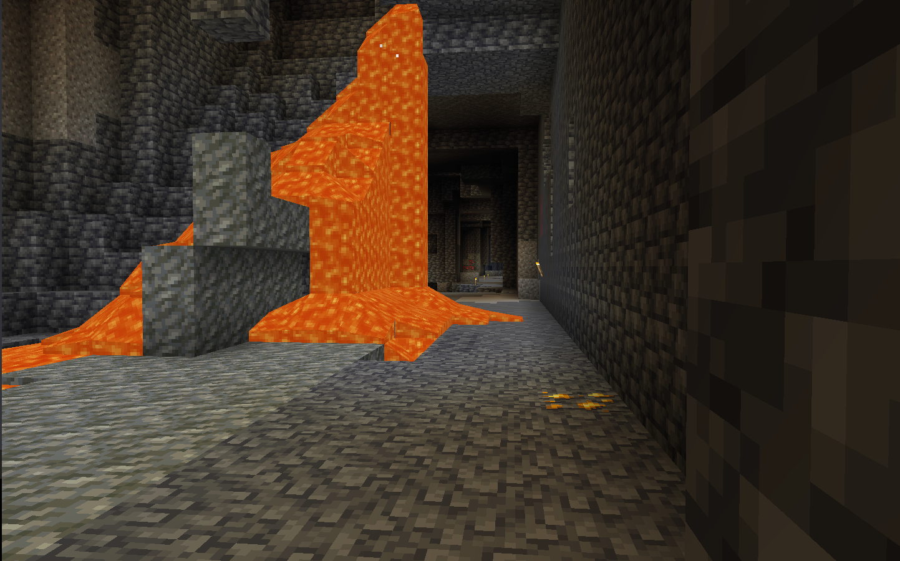
Seeking to capitalize on this opportunity, Nebligen filed a suit in the now-defunct Civil Chamber of Justice against Thomas, alleging theft of cherry trees from their land. Narrowly losing the suit in a coin flip after previous efforts by the presiding judge to break the stalemate failed, Caelan of Nebligen resolved to settle the dispute via military means.
War of Blossoms | 1260Jun. 27, 2024 - 1302Aug. 8, 2024 AVL
Despite being anticipated by belligerents and bystanders alike to be a major showdown, in reality the War of Blossoms saw no real combat for its entire duration. The previously established Malrostan-Nebligenner Rivalry was shown to be largely bluff and bluster, and eventually at the Emperor's behest both parties agreed to a mutual truce, with neither claiming victory.
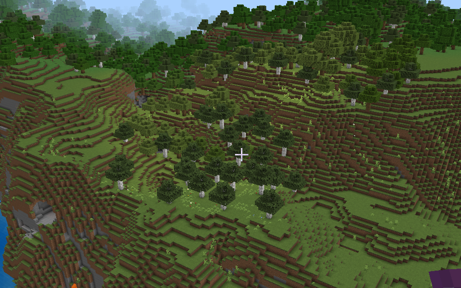
Antevicarian Period | 1303Aug. 9, 2024 - 1326Sep. 1, 2024 AVL
Only one day after the formal end to the War of Blossoms, Allevaricism was announced as the planned state religion of Pladsylvania. This was followed shortly thereafter by the Emperor announcing that an election would be held to decide the first Vicar General; the co-ruler of the newly instituted church.
Throughout most of the campaign, Caelan and Aran seemed to be the two front-runners, with Thomas, Jack and Lachlan also running. Caelan was one of the later candidates to enter the race, and adopted much of the platforms of their opponents. This approach emphasized building a broad support base and remaining relatively moderate, so as to not alienate any particular group. By contrast, Aran championed the idea of a strong, stalwart and independent Vicar General who would act as a check on the Emperor's power. Caelan would ultimately win the election, though Aran received only the third-most votes, falling behind Thomas.
Reign of Two Pontiffs | 1327Sep. 2, 2024 - 1428Dec. 12, 2024 AVL
Caelan and Aran, the first two Vicar Generals in Pladsylvanian history, together oversaw a period of considerable socioeconomic change. The second ship commissioned into the Pladsylvanian navy, the Herald of the Seas, was finally built during the first half of Caelan's term, having been designed before even the founding of the Confederation itself. Also during Caelan's first term were the foundings of Herbsthalden, Eichenbrueck, and Pellendam in the Imperial Abbey of Mittelwald. The very beginning of Aran's term saw the construction of the Paterdom monastery, though his time in office was effectively cut short by the onset of the First Great Abeyance.
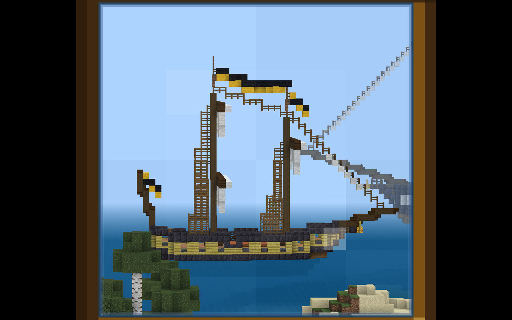
First Great Abeyance | 1429Dec. 13, 2024 - 1528Mar. 22, 2025 AVL
Towards the tail end of Aran's first term as Vicar General, Pladsylvania fell into a general decline, as architectural and economic progress ground to a halt in a cyclical downturn. This began a prolonged period of complete stagnation, even longer than the ones faced by the Vollandan Empire and Tae Torkan People's Republic.
The Prospering | 1529Mar. 23, 2025 - 1584May. 17, 2025 AVL
This extended period of stagnancy was ended by the resumption of quarrying under Kaiserbuhel, carried out by the Emperor, which itself kickstarted renewed building and economic development across much of the rest of the realm. This period saw the founding of the territory of Gattinborn, as well as significant terraforming efforts in Pilzingen in preparation for the 1545 Pilzingen Camping Trip. Significant renovations to the Kaiserbuhel courtyard, particularly the addition of the Tree of Helping Spirits, also occured during this time. One of the last significant events during this time was the finishing of the Kaiserbuhel quarry, with slime finally being laid down across its floor on 1582 AVL.
Squire Rebellion | 1538Apr. 1, 2025 - 1592May. 25, 2025 AVL
With the Prospering came new squires immigrating into Pladsvylania en masse, and tensions soon broke out between many of these squires and the Emperor. Protests against ROSA and undiplomatic remarks made against constituent territories of the Confederation were a particular sore point. By 1565 AVL, the Emperor's plans to eliminate all current squires became clear, a goal that was finally achieved on 1592 AVL.
Banquet Era | 1585May. 18, 2025 - 1615Jun. 17, 2025 AVL
Riding on the coattails of the recent building boom and general economic prosperity, the Emperor planned a banquet of all Electors in the Imperial Diet, during which significant new legislative goals were outlined and agreed to. Arguably the most influential of the resulting motions was the declaration of war against the Wardens of the Deep, with the express war aim of securing the Silence Armour Trim.
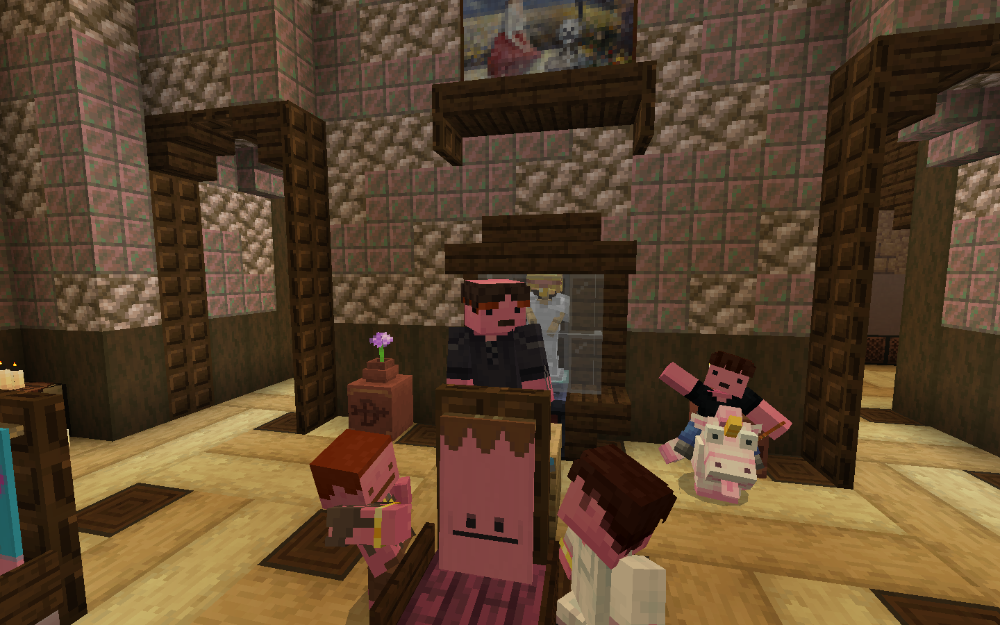
Silent War | 1605Jun. 7, 2025 - 1615Jun. 17, 2025 AVL
The Silent War, as it came to be known, was one of the shortest in recorded and especially recent history. The forces of the Pladsylvanian Confederation spent most of the war preparing for what they expected to be a protracted and costly series of offensives. The first of these planned offensives would be the Western Offensive, a campaign against the nearest cluster of untouched ancient cities. However, the offensive would be cut short at the Action of Aran's Serendipity, the first and only action of the war, when Pladsylvania secured an unexpectedly swift victory.
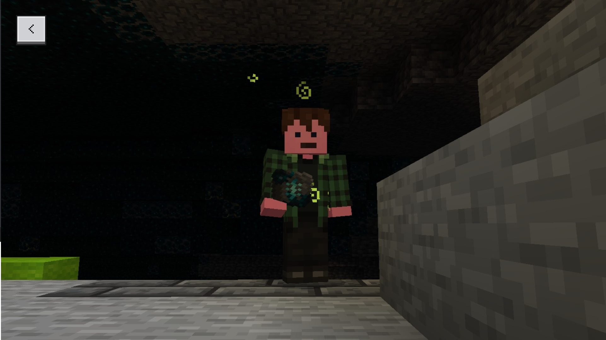
Secular Recession | 1616Jun. 18, 2025 - 1788Dec. 7, 2025 AVL
Even after their decisive success in the Silent War, the Pladsylvanian economy spooled down gradually following the end of the conflict. Before long, only excavation and construction projects in and around Paterdom saw any continued progress.
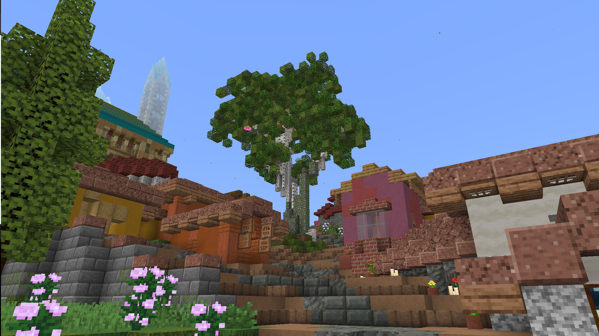
Second Great Abeyance | 1789Dec. 8, 2025 - 1841Jan. 29, 2026 AVL
Eventually, even the efforts by Paterdom waned, in a period known as the Second Great Abeyance, receiving its name due to being characterized with the same national lethargy as its predecessor.
Orchidean Renaissance | 1842Jan. 30, 2026 - 1874Mar. 3, 2026 AVL
The Second Great Abeyance was finally ended by construction efforts in the Barony of Bluetchen, which triggered a knock on economic resurgence in Mittelwald, Krauhalt and Gattinborn. All four of these territories would play a role in the Convoy Crisis, the consistent headline story throughout this period. Other significant events included the Desprucing of Mittelwald, and the construction of SKHT Aperture Broadcasting tower over Bad Kardlinhaus.
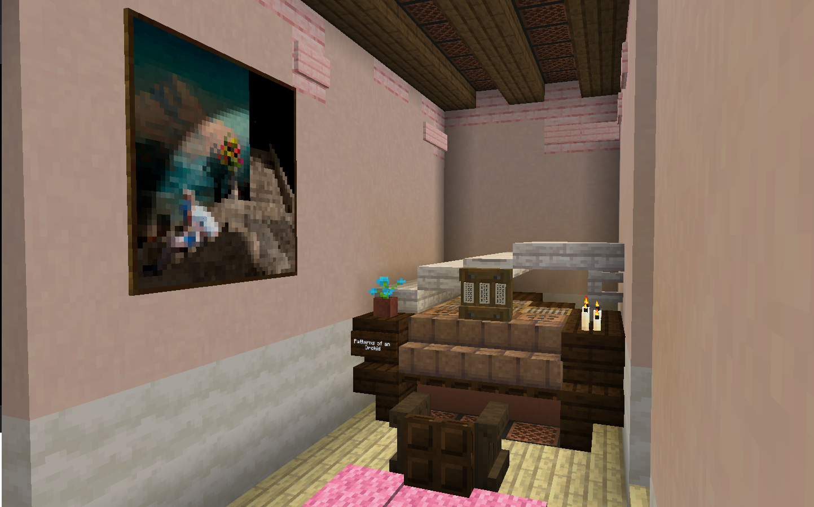
Convoy Crisis | 1848Feb. 5, 2026 - 1868Feb. 25, 2026 AVL
A refugee crisis set in motion by prospecting efforts south of Dunotahl, and the devastation of a local village. The two survivors, later named Bentley the Big and Elizabeth the Towering, were airlifted first to Waechterhagen and later to the new settlement of Luftoog. From there, given adequate berths and foodstuffs, the population exploded and convoys of refugees were sent to Gattinborn. The crisis was eventually ended by the signing of the Treaty of Sicherhaven, named after the new settlement in Gattinborn purpose-built to house the refugees.
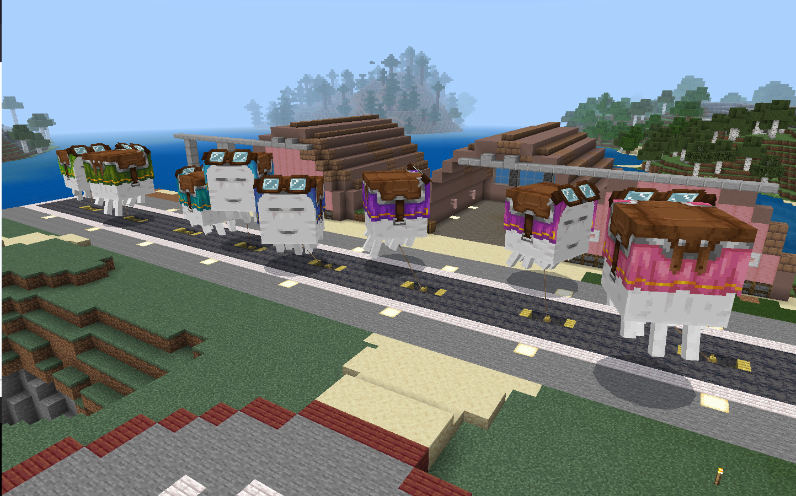
East by West Marches | 1875Mar. 4, 2026 - 1914Apr. 12, 2026 AVL AVL
Marked by the founding of Armbruster, a settlement around the nearest end portal to the Pladsylvanian metropole, and to its east. Industrial efforts, both in the construction of new farms and the ramping up of operations of existing ones, were emphasized in this period so as to bolster the Pladsylvanian economy, which was in many ways still slowed from the earlier recession and abeyance. In the Western Reaches, the largest quarry seen in recorded history was laid down, serviced by the most advanced digging platform seen by that time; Sedna Station.
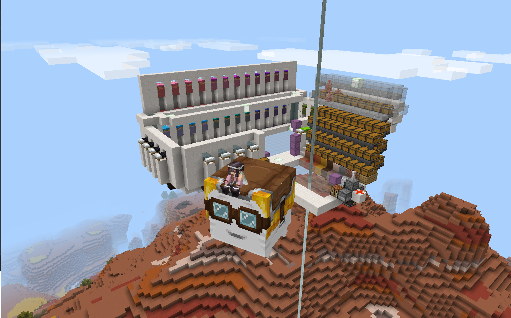
The period was also marked by an influx of squires which, unlike the past Squire Rebellion, resulted in surprisingly little conflict. These squires, nearly all settling to the west of pre-existing settlements, and the location of Armbruster to the east of the Pladsylvanian metropole, earned the period its name.
The Antipathy | 1915Apr. 13, 2026 AVL - Present
TBD (Currently Ongoing)
Politics
Pladsylvania is a semi-constitutional monarchy, in which the Emperor wields significant though technically not absolute power. Despite possessing supreme executive and judicial authority, they still require the assent of the Imperial Diet for most legislative functions.
Imperial Diet
The Imperial Diet is the supreme legislative authority in Pladsylvania, composed of seven Electors and chaired by the Emperor. They pass laws via motions, which are voted on by sitting Electors. Some motions, known as chair inquiries, are not legally binding, and can be used simply to gauge the body's opinion on a given question without compelling any action.
The extent to which the Imperial Diet meaningfully restricts the Emperor's power, or if it even does at all, could be a subject of debate. The general support, or at worst mere apathy from a majority of sitting Electors the Emperor has enjoyed throughout the institution's history has made its real influence difficult to determine. Further complicating the matter is the Special Provisions section of the 3rd Constitution, which theoretically allows the Emperor to bypass the Imperial Diet entirely under arguably too vague of circumstances.
Curia Regis
The 5th Imperial Curia, more commonly known as the Curia Regis, is the largest general advisory body to the Emperor, tasked with assisting in day-to-day governance as needed. Unlike previous curiae, which were each generally convened for a specific purpose and later disbanded, the Curia Regis is a standing curia. This means it remains indefinitely, to be consulted on an ad hoc basis as the Emperor deems fit.
Members of the Curia Regis, known as Courtiers, are high-ranking officials in the Confederation and, with the exception of the Vicar General, appointed and subject to removal by the Emperor alone.
Regency Council
The Regency Council is a semi-official advisory body to the Emperor, made up of the Regent and Viceregent. Unlike the other institutions described here, it was never formally established via either Decree or Imperial directive, and so it sits in a legal grey area. Questions of its legal status aside, the council remains relevant primarily as the Emperor's innermost circle.
As the first two individuals in the line of succession, both members of the council are typically the most well-informed on classified government matters, secret projects, etc. They are also the only ones besides the Emperor that are granted administrator's privilege.
Suffragist's Bloc
The Suffragist's Bloc is a special advisory body, tasked with assisting the Emperor on gender-sensitive matters. It was formed in response to an early incident of the Squire Rebellion, and has remained mostly on standby for crisis consultation and miscellaneous smaller duties.
Squire Intake & Relations Board
The newest of the organizations listed here, the Squire Intake & Relations Board (SIRB) was founded at the start of the latter half of the East by West Marches, in order to improve coordination and logistics associated with taking in large numbers of new squires, including emergency consultation on problematic or rebellious ones, as well as decisions to grant knighthood.
As outlined in the Imperial directive for the creation of the Squire Intake & Relations Board, both members of the Regency Council, as well as the Leader and Deputy Leader of the Bloc are granted seats on the board. Additional members may be added and removed at the Emperor's discretion.